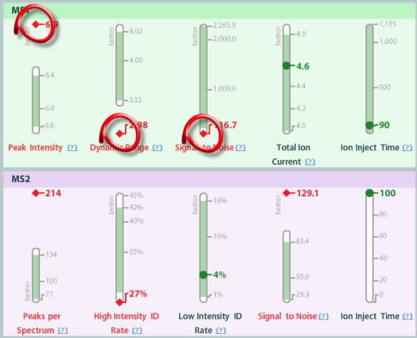
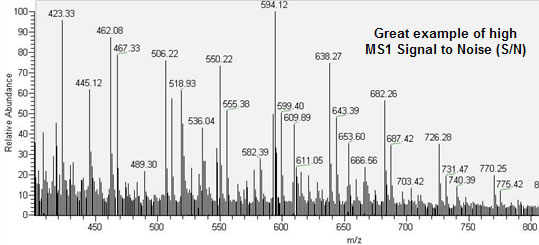

Signal to Noise can tell you a lot about how well your LC-MS system is running or the quality of your samples. If you know that your QC standard is at a concentration that gives good signal historically, then it follows that if the Signal to Noise metric is out of range for your QC standard, something is wrong with the MS1 and/or MS2 ionization process.
In this current example, we see that several MS1/MS2 metrics are out of range:

Here we will focus on the MS1 metrics. When the MS1 Signal to Noise is out of range, particularly when it is low, this usually means that there are not any real peptide peaks coming off the column. This could be due to several reasons. Perhaps some sample was lost along the way, either in the sample preparation stage or through the use of a bad LC column. Whatever the reason, we also notice that the Dynamic Range is low as well. This correlates nicely with the low Signal to Noise , since the Dynamic Range is the difference between the lowest and highest MS1 peaks.

If you have questions, comments and/or insights about MassQC , you can share them on the MassQC Users Forum .